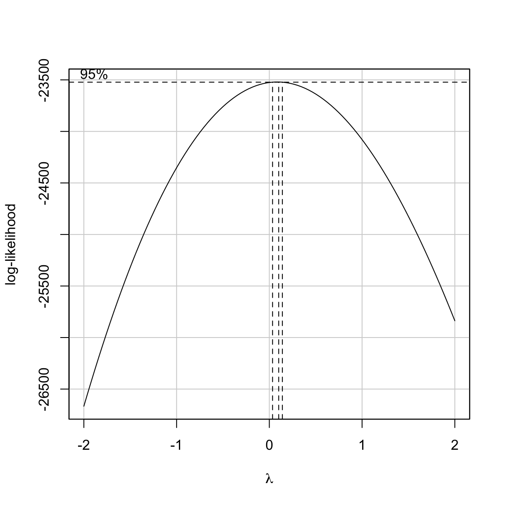
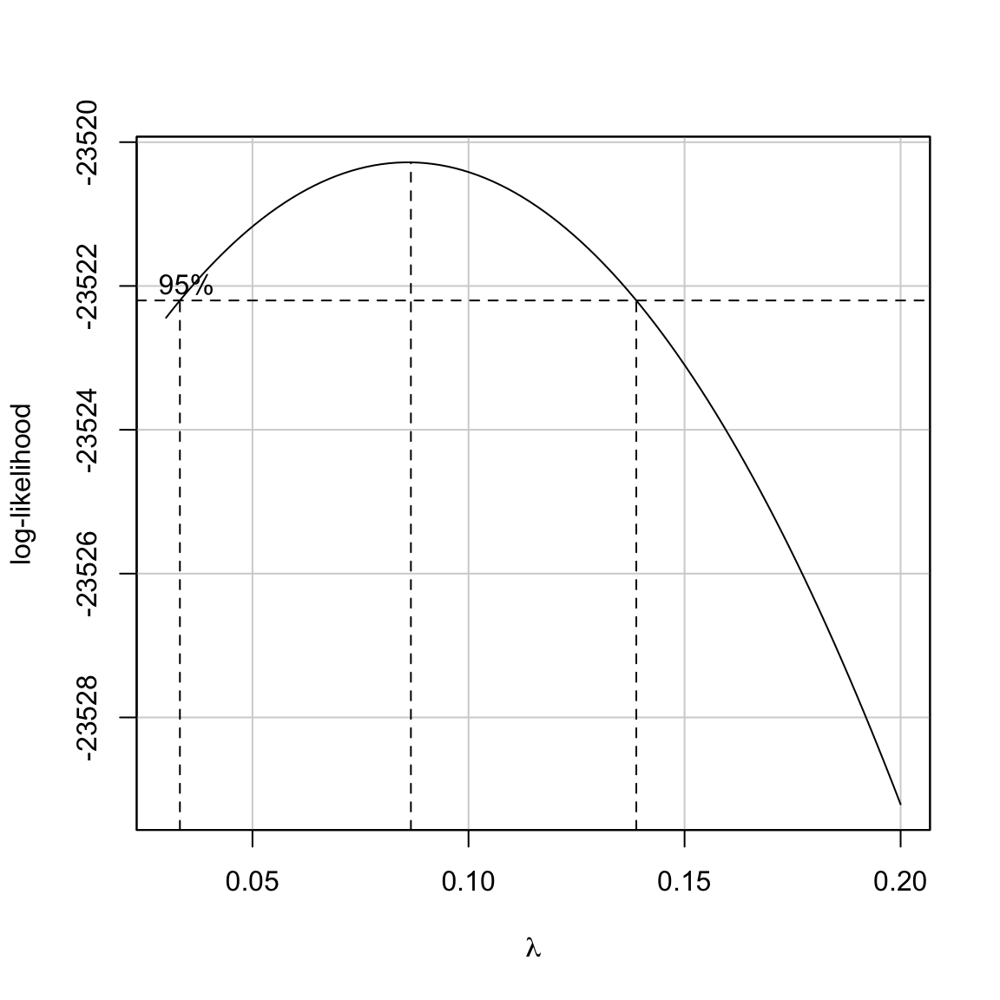

In this set of notes, we will use data from slid.csv. This file include data collected in 1994 from employed citizens living in Ontario between the ages of 16 and 65 for Statistics Canada’s Survey of Labour and Income Dynamics (SLID). The variables in the datset are:
The goal of the analysis will be to model the hourly wage rate using age, education and sex as predictors.
# Load libraries
library(broom)
library(car)
library(corrr)
library(dplyr)
library(ggplot2)
library(readr)
# Import data
slid = read_csv("~/Dropbox/epsy-8264/data/slid.csv")
head(slid)## # A tibble: 6 x 4
## wages age education male
## <dbl> <int> <int> <int>
## 1 10.6 40 15 1
## 2 11 19 13 1
## 3 17.8 46 14 1
## 4 14 50 16 0
## 5 8.2 31 15 1
## 6 17.0 30 13 0As with any analysis, we will begin by examining the scatterplots of each predictor with the outcome. These plots suggest that each of the predictors is related to the outcome.
Next, we fit a model regressing wages on the three predictors simultaneously and examine the residual plots.
# Fit model
lm.1 = lm(wages ~ 1 + age + education + male, data = slid)
# Examine residual plots
qqPlot(lm.1)
residualPlot(lm.1)
Examining the residual plots:
Including the age by education interaction term (age:education) seems to alleviate the nonlinearity issue, but the residual plots indicate there still may be violations of the normality and homogeneity of variance assumptions. Violating noramility is less problematic here since the Central Limit Theorem will ensure that the inferences are still approximately valid. Violating homoskedasticity, on the other hand, is more problematic.
# Fit model
lm.2 = lm(wages ~ 1 + age + education + male + age:education, data = slid)
Recall that violating homoskedasticity results in:
This means that the SEs (and resulting \(t\)- and \(p\)-values) for the coefficients are incorrect. In addition, the OLS estimators are no longer the most efficient estimators. How bad this is depends on several factors (e.g., how much the variances differ, sample sizes)
Recall that the variance–covariance matrix for the residuals was:
\[ \boldsymbol{\sigma^2}(\boldsymbol{\epsilon}) = \begin{bmatrix}\sigma^2_{\epsilon} & 0 & 0 & \ldots & 0 \\ 0 & \sigma^2_{\epsilon} & 0 & \ldots & 0\\ 0 & 0 & \sigma^2_{\epsilon} & \ldots & 0\\ \vdots & \vdots & \vdots & \ddots & \vdots \\ 0 & 0 & 0 & \ldots & \sigma^2_{\epsilon}\end{bmatrix} \]
This implied homoskedasticity; the variance for each residual was identical, namely \(\sigma^2_{\epsilon}\). Since the variance estimate for each residual was the same, we could estimate a single value for these variances, the MSE, and use that to obtain the sampling variances and covariances for the coefficients:
\[ \boldsymbol{\sigma^2_B} = \sigma^2_{\epsilon} (\mathbf{X}^{\prime}\mathbf{X})^{-1} \]
Heteroskedasticy implies that the residual variances are not constant. We can represnt the variance–covariance of the residuals under heteroskedasticity as:
\[ \boldsymbol{\sigma^2}(\boldsymbol{\epsilon}) = \begin{bmatrix}\sigma^2_{1} & 0 & 0 & \ldots & 0 \\ 0 & \sigma^2_{2} & 0 & \ldots & 0\\ 0 & 0 & \sigma^2_{3} & \ldots & 0\\ \vdots & \vdots & \vdots & \ddots & \vdots \\ 0 & 0 & 0 & \ldots & \sigma^2_{n}\end{bmatrix} \]
In this matrix, each residual has a potentially different variance. Now, estimating \(\sigma^2_{\epsilon}\) becomes more complicated, as does estimating the sampling variances and covariances of the regression coefficients .
There are at least three primary methods for dealing with heteroskedasticity: (1) transform the \(Y\)-values using a variance stablizing transformation; (2) fit the model using weighted least squares rather than OLS; or (3) adjust the SEs and covariances to account for the non-constant variances. We will examine each of these in turn.
The idea behind using a variance stabilizing transformation on \(Y\) is that the transformed \(Y\)-values will be homoskedastic. If so, we can fit the OLS regression model using the transformed \(Y\)-values; the inferences will be valid; and, if necessary, we can back-transform for better interpretations. There are several transformations that can be applied to \(Y\) that might stabilize the variances. Two common transformations are:
Prior to applying these transformations, you may need to add a constant value to each \(Y\) value so that \(Y>0\) (log-transformation) or \(Y \get 0\) (square-root transformation).
Both of these transformations are power transformations. Power transformations have the mathematical form
\[ Y_i^{p} \]
The following are all power transformations of \(Y\):
\[ \begin{split} & ~\vdots \\[0.5em] & Y^4 \\[0.5em] & Y^3 \\[0.5em] & Y^2 \\[1.5em] & Y^1 = Y \\[1.5em] & Y^{0.5} = \sqrt{Y} \\[0.5em] & Y^0 \equiv \ln(Y) \\[0.5em] & Y^{-1} = \frac{1}{Y} \\[0.5em] & Y^{-2} = \frac{1}{Y^2} \\[0.5em] & ~\vdots \end{split} \]
Powers such that \(p<1\) are refrred to as downward transformations, and those with \(p>1\) are referred to as upward transformations. Both the log-transformation and square-root transformation are downward transformations of \(Y\).
# Create transformed Ys
slid = slid %>%
mutate(
sqrt_wages = sqrt(wages),
ln_wages = log(wages)
)
# Fit models
lm_sqrt = lm(sqrt_wages ~ 1 + age + education + male, data = slid)
lm_ln = lm(ln_wages ~ 1 + age + education + male, data = slid)The plots below show the residuals based on fitting a model with each of these transformations applied to the wages data.
Both of these residual plots seem to show less heterogeneity than the residuals fro mthe model with the untransformed wages. However, neither transformation seems to have “fixed” the problem completely.
In their seminal paper, Box & Cox (1964) proposed a series of power transformations that could be applied to data in order to better meet assumptions such as linearity, normality, and homogeneity of variance. The general form of the Box-Cox model is:
\[ Y^{(\lambda)}_i = \beta_0 + \beta_1(X1_{i}) + \beta_2(X2_{i}) + \ldots + \beta_k(Xk_{i}) + \epsilon_i \]
where the errors are independent and \(\mathcal{N}(0,\sigma^2_{\epsilon})\), and
\[ Y^{(\lambda)}_i = \begin{cases} \frac{Y_i^{\lambda}-1}{\lambda} & \text{for } \lambda \neq 0 \\[1em] \ln(Y_i) & \text{for } \lambda = 0 \end{cases} \]
This is only defined for positive values of \(Y\).
The powerTransform() function from the car library can be used to determine the optimal value of \(\lambda\). The boxCox() function from the same library gives a profile plot showing the log-likelohoods for a sequence of \(\lambda\) values. If you do not specify the sequence of \(\lambda\) values it will use lambda = seq(from = -2, to = 2, by = 1/10) by default.
powerTransform(lm.1)## Estimated transformation parameter
## Y1
## 0.08598786boxCox(lm.1, lambda = seq(from = -2, to = 2, by = 1/10))
The output from the powerTransform() function gives the optimal power for the transformation of \(Y\), namely \(\lambda = 0.086\). To actually implement this we use the transformation in the Box-Cox algorithm from earlier.
slid = slid %>%
mutate(
bc_wages = (wages ^ 0.086 - 1) / 0.086
)
# Fit models
lm_bc = lm(bc_wages ~ 1 + age + education + male, data = slid)The residual plots show much better behaved residuals, although even this optimal transformation still shows heteroskedasticity.
One problem with using this transformation is that the regression coefficients do not have a direct interpretation. For example, the age coefficient would be interpreted as: each one-year difference in age is associated with a 0.0227-unit difference in the transformed \(Y\) controlling for differences in education and sex. But what does a 0.227-unit difference in transformed \(Y\) mean when we translate that back to wages?
tidy(lm_bc)## # A tibble: 4 x 5
## term estimate std.error statistic p.value
## <chr> <dbl> <dbl> <dbl> <dbl>
## 1 (Intercept) 1.04 0.0475 21.9 1.80e-100
## 2 age 0.0227 0.000687 33.0 2.85e-211
## 3 education 0.0707 0.00272 26.0 5.14e-138
## 4 male 0.282 0.0164 17.2 4.99e- 64The likelihood profile for the sequence of \(\lambda\) values also indicates that \(\lambda = 0.086\) is optimal; it produces the maximum likelihood of all the \(\lambda\) values. The benefit to also examining the profile plot is that we get a 95% CI for \(\lambda\) as well. This interval offers a range of \(\lambda\) values that will give comparable transformations. Since the limits are not outputted by the function, we may need to zoom in to determine these limits by tweaking the sequence of \(\lambda\) values in the boxCox() function.
boxCox(lm.1, lambda = seq(from = 0.03, to = 0.2, by = .001))
It looks as though \(.03 \leq \lambda \leq 0.14\) all give comparable transformations. Unfortunately, none of these transformations have straight-forward interpretations. If, for example, the CI had included 0, then we could have used the simple log-transformation which does have a direct interpretation of the coefficients.
Another method for dealing with heteroskedasticity is to change the method we use for estiating the coefficients and standard errors. The most common method for doing this is to use weighted least squares estimation (WLS) rather than ordinary least squares (OLS).
Under heteroskedasticity recall that the residual variance of the ith residual is \(\sigma^2_i\), and the variance–covariance matrix of the rsiduals is defined as,
\[ \boldsymbol{\Sigma} = \begin{bmatrix}\sigma^2_{1} & 0 & 0 & \ldots & 0 \\ 0 & \sigma^2_{2} & 0 & \ldots & 0\\ 0 & 0 & \sigma^2_{3} & \ldots & 0\\ \vdots & \vdots & \vdots & \ddots & \vdots \\ 0 & 0 & 0 & \ldots & \sigma^2_{n}\end{bmatrix}, \]
This implies that the \(n\) observations no longer have the same reliability. Observations with small variances have more reliability than observations with large variances. The idea behind WLS estimation is that those observations that are less reliable are down-weighted in the estimation of the overall error variance.
Let’s assume that each of the error variances, \(\sigma^2_i\), are known. This is generally not a valid assumption, but it gives us a point to start from. If we know these values, we can modify the likelihood function from OLS by substituting these values in for the OLS error variance, \(\sigma^2_{\epsilon}\).
\[ \begin{split} \mathrm{OLS:} \qquad \mathcal{L}(\boldsymbol{\beta}) &= \prod_{i=1}^n \frac{1}{\sqrt{2\pi\sigma^2_{\epsilon}}}\exp\left[-\frac{1}{2\sigma^2_{\epsilon}} \big(Y_i-\beta_0 - \beta_1X_{1i} - \beta_2X_{2i} - \ldots - \beta_kX_{ki}\big)^2\right] \\[1em] \mathrm{WLS:} \qquad \mathcal{L}(\boldsymbol{\beta}) &= \prod_{i=1}^n \frac{1}{\sqrt{2\pi\sigma^2_{i}}}\exp\left[-\frac{1}{2\sigma^2_{i}} \big(Y_i-\beta_0 - \beta_1X_{1i} - \beta_2X_{2i} - \ldots - \beta_kX_{ki}\big)^2\right] \end{split} \]
Next, we define the reciprocal of the error variances as \(w_i\), or weight:
\[ w_i = \frac{1}{\sigma^2_i} \]
This can be used to simplify the likelihood function for WLS:
\[ \begin{split} \mathcal{L}(\boldsymbol{\beta}) &= \bigg[\prod_{i=1}^n \sqrt{\frac{w_i}{2\pi}}\bigg]\exp\left[-\frac{1}{2} \sum_{i=1}^n w_i\big(Y_i-\beta_0 - \beta_1X_{1i} - \beta_2X_{2i} - \ldots - \beta_kX_{ki}\big)^2\right] \end{split} \]
We can then find the coefficient estimates by maximizing \(\mathcal{L}(\boldsymbol{\beta})\) with respect to each of the coefficients; these derivatives will result in \(k\) normal equations. Solving this system of normal equations we find that:
\[ \mathrm{B} = (\mathbf{X}^{\intercal}\mathbf{W}\mathbf{X})^{-1}\mathbf{X}^{\intercal}\mathbf{W}\mathbf{Y} \]
where W is a diagonal matrix of the weights,
\[ \mathbf{W} = \begin{bmatrix}w_{1} & 0 & 0 & \ldots & 0 \\ 0 & w_{2} & 0 & \ldots & 0\\ 0 & 0 & w_{3} & \ldots & 0\\ \vdots & \vdots & \vdots & \ddots & \vdots \\ 0 & 0 & 0 & \ldots & w_{n}\end{bmatrix} \]
The variance–covariance matrix for the regression coefficients can be computed using:
\[ \boldsymbol{\sigma^2}(\mathrm{B}) = \sigma^2_{\epsilon}(\mathbf{X}^{\intercal}\mathbf{W}\mathbf{X})^{-1} \]
where the estimate for \(\sigma^2_{\epsilon}\) is:
\[ \hat\sigma^2_{\epsilon} = \frac{\sum_{i=1}^n w_i \times \epsilon_i^2}{n - k - 1} \]
To illustrate WLS, consider the data collected in 1877 by Francis Galton (galton.csv). This dataset includes diameter measurements of pea plants (parent), and the average (progeny) and standard deviation (sd) diametere based on 10 pea plants grown from the parent’s seeds.
pea = read_csv("~/Dropbox/epsy-8264/data/galton.csv")## Parsed with column specification:
## cols(
## parent = col_double(),
## progeny = col_double(),
## sd = col_double()
## )head(pea, 7)## # A tibble: 7 x 3
## parent progeny sd
## <dbl> <dbl> <dbl>
## 1 0.21 0.173 0.0199
## 2 0.2 0.171 0.0194
## 3 0.19 0.164 0.0190
## 4 0.18 0.164 0.0204
## 5 0.17 0.161 0.0165
## 6 0.16 0.162 0.0159
## 7 0.15 0.160 0.0176In his analysis, Galton was trying to predict the diameters for the progeny peas using the parent peas’ diameters. Fitting this model using OLS, we find:
lm_ols = lm(progeny ~ 1 + parent, data = pea)
tidy(lm_ols)## # A tibble: 2 x 5
## term estimate std.error statistic p.value
## <chr> <dbl> <dbl> <dbl> <dbl>
## 1 (Intercept) 0.127 0.00699 18.2 0.00000929
## 2 parent 0.210 0.0386 5.44 0.00285The problem, of course, is that the variation in the residuals is not constant as the reliability for the 10 progeny measurements is not the same for the 7 parent peas. Because of this, we may want to fit a WLS regression model rather than an OLS model.
# Get design matrix
X = model.matrix(lm_ols)
# Get Y vector
Y = matrix(data = pea$progeny, nrow = 7)
# Set up weight matrix, W
w_i = 1 / (pea$sd ^ 2)
W = diag(w_i)
W## [,1] [,2] [,3] [,4] [,5] [,6] [,7]
## [1,] 2530.272 0.000 0.000 0.000 0.00 0.000 0.000
## [2,] 0.000 2662.517 0.000 0.000 0.00 0.000 0.000
## [3,] 0.000 0.000 2781.784 0.000 0.00 0.000 0.000
## [4,] 0.000 0.000 0.000 2410.005 0.00 0.000 0.000
## [5,] 0.000 0.000 0.000 0.000 3655.35 0.000 0.000
## [6,] 0.000 0.000 0.000 0.000 0.00 3935.712 0.000
## [7,] 0.000 0.000 0.000 0.000 0.00 0.000 3217.328# Compute coefficients
B = solve(t(X) %*% W %*% X) %*% t(X) %*% W %*% Y
B## [,1]
## (Intercept) 0.1279642
## parent 0.2048012# Compute errors from WLS
e_i = pea$progeny - X %*% B
# Compute MSE estimate
mse = sum( w_i * (e_i ^ 2) ) / 5
# Compute variance-covariance matrix for B
vc_b = mse * solve(t(X) %*% W %*% X)
vc_b## (Intercept) parent
## (Intercept) 4.639303e-05 -0.0002582772
## parent -2.582772e-04 0.0014557908The results of fitting both the OLS and WLS models appear below. Comparing the two sets of results, there is little change in the coefficients and SEs for this data set when using WLS estimation rather than OLS estimation.
| Coefficient | B | SE | B | SE |
|---|---|---|---|---|
| Intercept | 0.127 | 0.0070 | 0.1280 | 0.0068 |
| Parent | 0.210 | 0.0386 | 0.2048 | 0.0382 |
The lm() function can also be used to fit a model using WLS estimation. To do this we inlcude the weights= argument in lm(). This takes a vector of weights representing the \(w_i\) values for each of the \(n\) observations.
lm_wls_2 = lm(progeny ~ 1 + parent, data = pea, weights = I(1 / (sd ^ 2)))
tidy(lm_wls_2)## # A tibble: 2 x 5
## term estimate std.error statistic p.value
## <chr> <dbl> <dbl> <dbl> <dbl>
## 1 (Intercept) 0.128 0.00681 18.8 0.00000787
## 2 parent 0.205 0.0382 5.37 0.00302Not only can we use tidy() and glance() to obtain coefficient and model-level summaries, but we can also use augment(), confint(), or any other function that takes a fitted model as its input.
The previous example assumed that the variance–covariance matrix of the residuals was known. In practice, this is almost never the case. When we do not know the error variances, we need to estimate them from the data.
To estimate the error variances for each observation, we:
This is a two-stage process in which we (1) estimate the weights, and (2) use those weights in the WLS estimation. We will illustrate this methodology using the SLID data.
# Step 1: Fit the OLS regression
lm_step_1 = lm(wages ~ 1 + age + education + male + age:education, data = slid)
# Step 2: Obtain the residuals and square them
out_1 = augment(lm_step_1) %>%
mutate(
e_sq = .resid ^ 2
)
# Step 2: Regresss e^2 on the predictors from Step 1
lm_step_2 = lm(e_sq ~ 1 + age + education + male + age:education, data = out_1)
# Step 3: Obtain the fitted values from Step 2
y_hat = fitted(lm_step_2)
# Step 4: Create the weights
w_i = 1 / (y_hat ^ 2)
# Step 5: Use the fitted values as weights in the WLS
lm_step_5 = lm(wages ~ 1 + age + education + male + age:education, data = slid, weights = w_i)Before examining any output from this model, let’s examine the residual plots. The residual plots suggest that the homoskedasticity asumption is much more reasonably satisfied; although it is still not perfect. The normality assumption looks untenable here.
One way to proceed is to apply a variance stabilizing transformation to \(Y\) (e.g., log-transform) and fit a WLS model. To do this you would go through the steps of estimating the weights again based on the transformed \(Y\).
# Examine residual plots
qqPlot(lm_step_5)
residualPlot(lm_step_5)
The WLS coefficient estimates, standard errors, and coefficient-level inference are presented below.
# Examine coefficient-level output
tidy(lm_step_5)## # A tibble: 5 x 5
## term estimate std.error statistic p.value
## <chr> <dbl> <dbl> <dbl> <dbl>
## 1 (Intercept) 4.97 0.227 21.9 1.37e-100
## 2 age 0.0801 0.00591 13.5 6.95e- 41
## 3 education -0.201 0.0316 -6.36 2.30e- 10
## 4 male 2.24 0.166 13.5 1.56e- 40
## 5 age:education 0.0185 0.000921 20.1 1.77e- 85Since the effect of heteroskedasticity is that the sampling variances and covariances are incorrect, one method of dealing with this is to use the OLS coefficients, but make adjustments to the variance–covariance matrix of the coefficients. Then the adjusted SEs are the square roots of these adjusted sampling variances.
We can compute the variance–covariance matrix of the regression coefficients using:
\[ V(\mathbf{B}) = (\mathbf{X}^{\intercal}\mathbf{X})^{-1}\mathbf{X}^{\intercal}\boldsymbol{\Sigma}\mathbf{X} (\mathbf{X}^{\intercal}\mathbf{X})^{-1} \]
where, under the standard regression assumptions, \(\boldsymbol{\Sigma} = \sigma^2_{\epsilon}\mathbf{I}\), which simplifies to
\[ V(\mathbf{B}) = \sigma^2_{\epsilon} (\mathbf{X}^{\intercal}\mathbf{X})^{-1} \]
If the errors are, however, heteroskedastic, then we need to use the heteroskedastic variance–covariance of the residuals,
\[ \boldsymbol{\Sigma} = \begin{bmatrix}\sigma^2_{1} & 0 & 0 & \ldots & 0 \\ 0 & \sigma^2_{2} & 0 & \ldots & 0\\ 0 & 0 & \sigma^2_{3} & \ldots & 0\\ \vdots & \vdots & \vdots & \ddots & \vdots \\ 0 & 0 & 0 & \ldots & \sigma^2_{n}\end{bmatrix}, \]
Remember that one of the formulas for variance of a random variable \(X\) (in the first set of notes) was
\[ \sigma^2_X = \mathbb{E}\bigg(\big[X_i - \mathbb{E}(X)\big]^2\bigg) \]
This means for the ith error variance, \(\sigma^2_i\), can be computed as
\[ \sigma^2_{i} = \mathbb{E}\bigg(\big[\epsilon_i - \mathbb{E}(\epsilon)\big]^2\bigg) \]
Which, since \(\mathbb{E}(\epsilon)=0\) simplifies to
\[ \sigma^2_{i} = \mathbb{E}\big(\epsilon_i^2\big) \]
This suggests that we can estimate \(\boldsymbol{\Sigma}\) as:
\[ \hat{\boldsymbol{\Sigma}} = \begin{bmatrix}\epsilon^2_{1} & 0 & 0 & \ldots & 0 \\ 0 & \epsilon^2_{2} & 0 & \ldots & 0\\ 0 & 0 & \epsilon^2_{3} & \ldots & 0\\ \vdots & \vdots & \vdots & \ddots & \vdots \\ 0 & 0 & 0 & \ldots & \epsilon^2_{n}\end{bmatrix}, \]
This modification is often referred to as a sandwich estimator because the \(\mathbf{X}^{\intercal}\boldsymbol{\Sigma}\mathbf{X}\) is “sandwiched” between two occurences of \((\mathbf{X}^{\intercal}\mathbf{X})^{-1}\).
To compute the adjusted variance–covariance matrix of the coefficients we fit the OLS regression and use that to define the design matrix and the \(\hat{\boldsymbol{\Sigma}}\) matrix.
# Fit OLS model
lm.1 = lm(wages ~ 1 + age + education + male, data = slid)
# Design matrix
X = model.matrix(lm.1)
# Sigma matrix
e_squared = augment(lm.1)$.resid ^ 2
Sigma = e_squared * diag(3997)
# Variance-covariance matrix for B
V_b_huber_white = solve(t(X) %*% X) %*% t(X) %*% Sigma %*% X %*% solve(t(X) %*% X)
# Compute SEs
sqrt(diag(V_b_huber_white))## (Intercept) age education male
## 0.635836527 0.008807793 0.038468695 0.207141705The SEs we produce from this method are typically referred to as Huber-White standard errors because they were introduced in a paper by Huber (1967) and their some of their statistical prperties were proved in a paper by White (1980).
Simulation studies by Long & Ervin (2000) suggest a slight modification to the Huber-White estimates; using
\[ \hat{\boldsymbol{\Sigma}} = \begin{bmatrix}\frac{\epsilon^2_{1}}{(1-h_{11})^2} & 0 & 0 & \ldots & 0 \\ 0 & \frac{\epsilon^2_{2}}{(1-h_{22})^2} & 0 & \ldots & 0\\ 0 & 0 & \frac{\epsilon^2_{3}}{(1-h_{33})^2} & \ldots & 0\\ \vdots & \vdots & \vdots & \ddots & \vdots \\ 0 & 0 & 0 & \ldots & \frac{\epsilon^2_{n}}{(1-h_{nn})^2}\end{bmatrix}, \]
We can compute this modification by adjusting the e_squared value in the R syntax as:
# Sigma matrix
e_squared = augment(lm.1)$.resid ^ 2 / ((1 - augment(lm.1)$.hat) ^ 2)
Sigma = e_squared * diag(3997)
# Variance-covariance matrix for B
V_b_huber_white_mod = solve(t(X) %*% X) %*% t(X) %*% Sigma %*% X %*% solve(t(X) %*% X)
# Compute SEs
sqrt(diag(V_b_huber_white_mod))## (Intercept) age education male
## 0.637012622 0.008821005 0.038539628 0.207364732We could use these SEs to compute the \(t\)-values, associated \(p\)-values, and confidence intervals for each of the coefficeints.
The three sets of SEs are:
| Coefficient | OLS | Huber-White | Modified Huber-White |
|---|---|---|---|
| Intercept | 0.5989773 | 0.6358365 | 0.6370126 |
| Age | 0.0086640 | 0.0088078 | 0.0088210 |
| Education | 0.0342567 | 0.0384687 | 0.0385396 |
| Age x Education | 0.2070092 | 0.2071417 | 0.2073647 |
In these data, the modified Huber-White adjusted SEs are quite similar to the SEs we obtained from OLS, despite the heteroskedasticity observed in the residuals. One advantage of this method is that we do not have to have a preconceived notion of the underlying pattern of variation like we do to use WLS estimation. If, however, we can identify the pattern of variation, then WLS estimation will produce more efficient (smaller) standard errors than sandwich estimation.
Box, G. E. P., & Cox, D. R. (1964). An analysis of transformations. Journal of the Royal Statisistical Society, Series B, 26, 211–246.
Huber, P. J. (1967). The behavior of maximum likelihood estimates under nonstandard conditiona. In L. M. Le Cam & J. Neyman (Eds.), Proceedings of the fifth berkeley symposium on mathematical statistics and probability (pp. 221–233). Berkeley, CA: University of California Press.
Long, J. S., & Ervin, L. H. (2000). Using heteroskedasticity consistent standard errors in the linear regression model. The American Statistician, 54, 217–224.
White, H. (1980). A heteroskedasticity-consistent covariance matrix estimator and a direct test for heteroskedasticity. Econometrica, 38, 817–838.